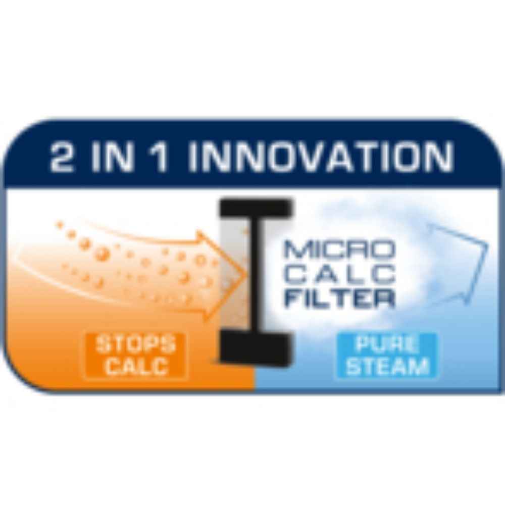
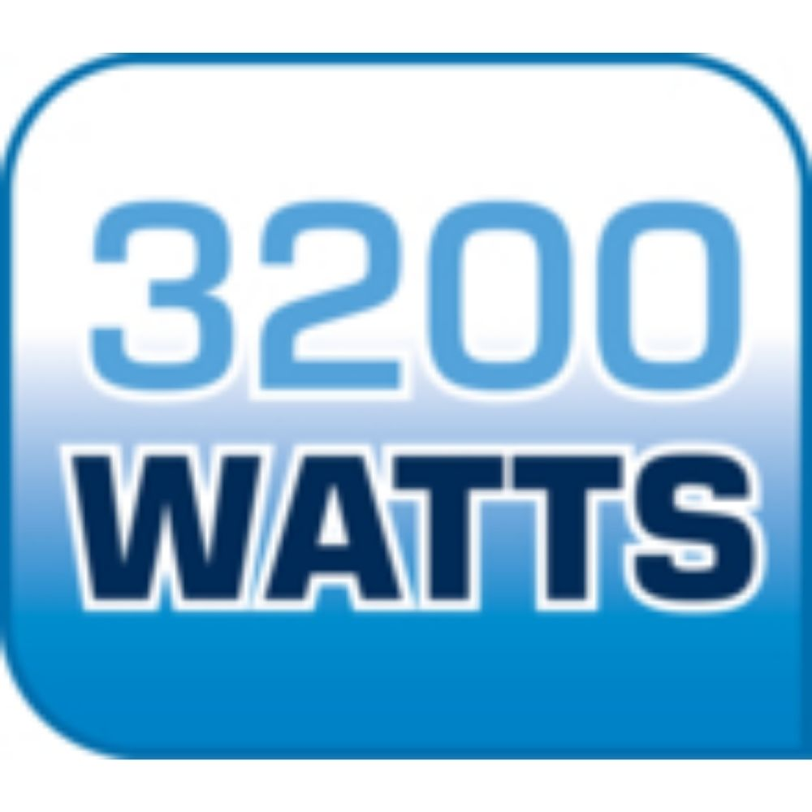
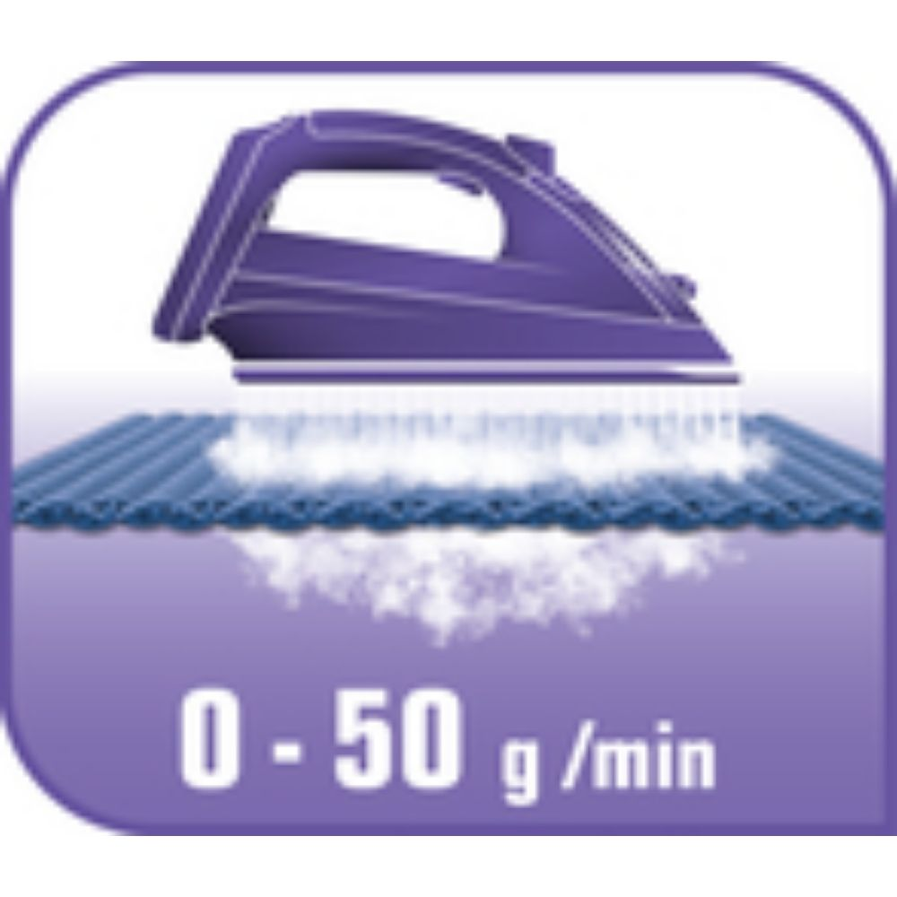
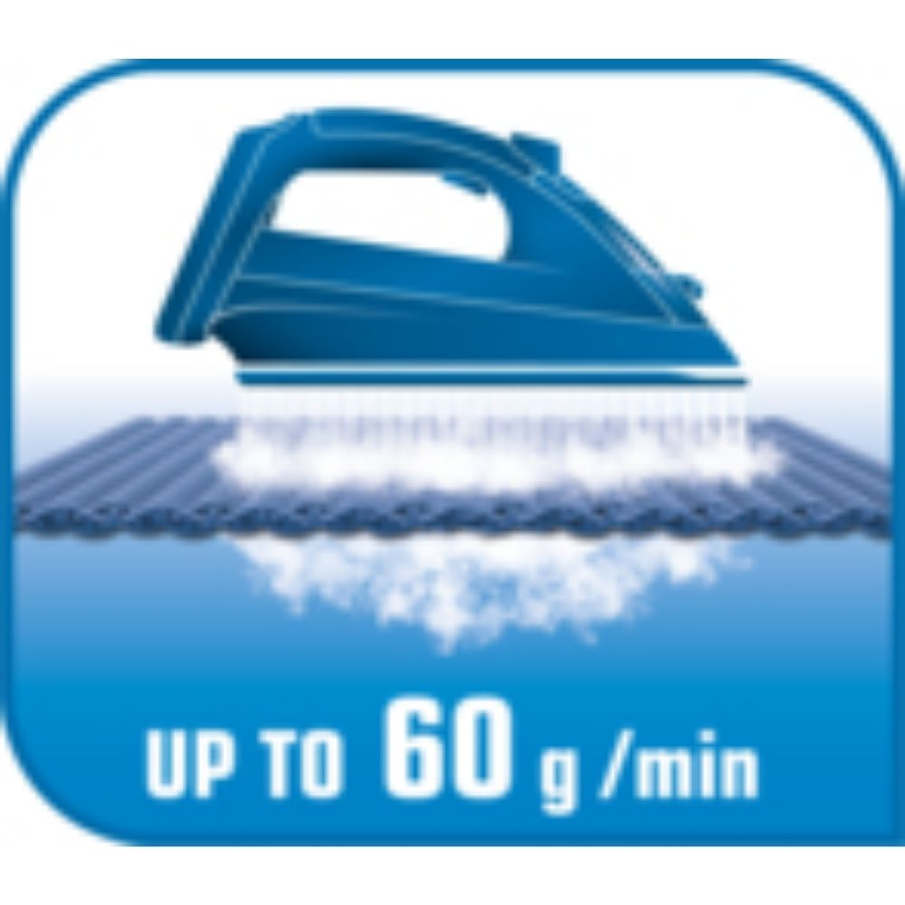
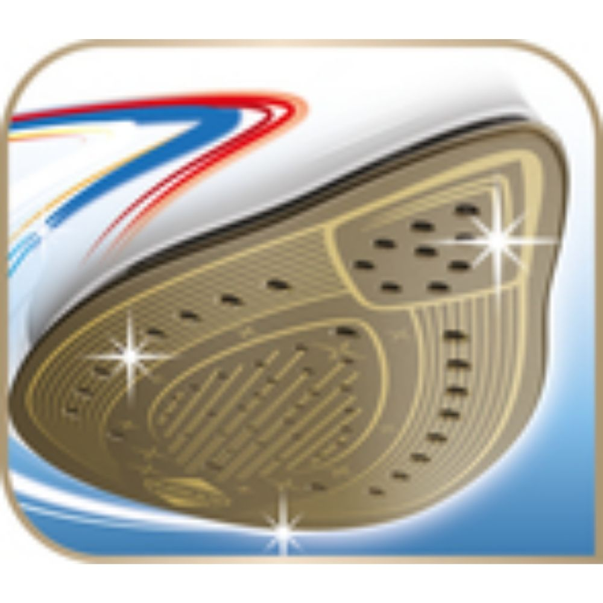
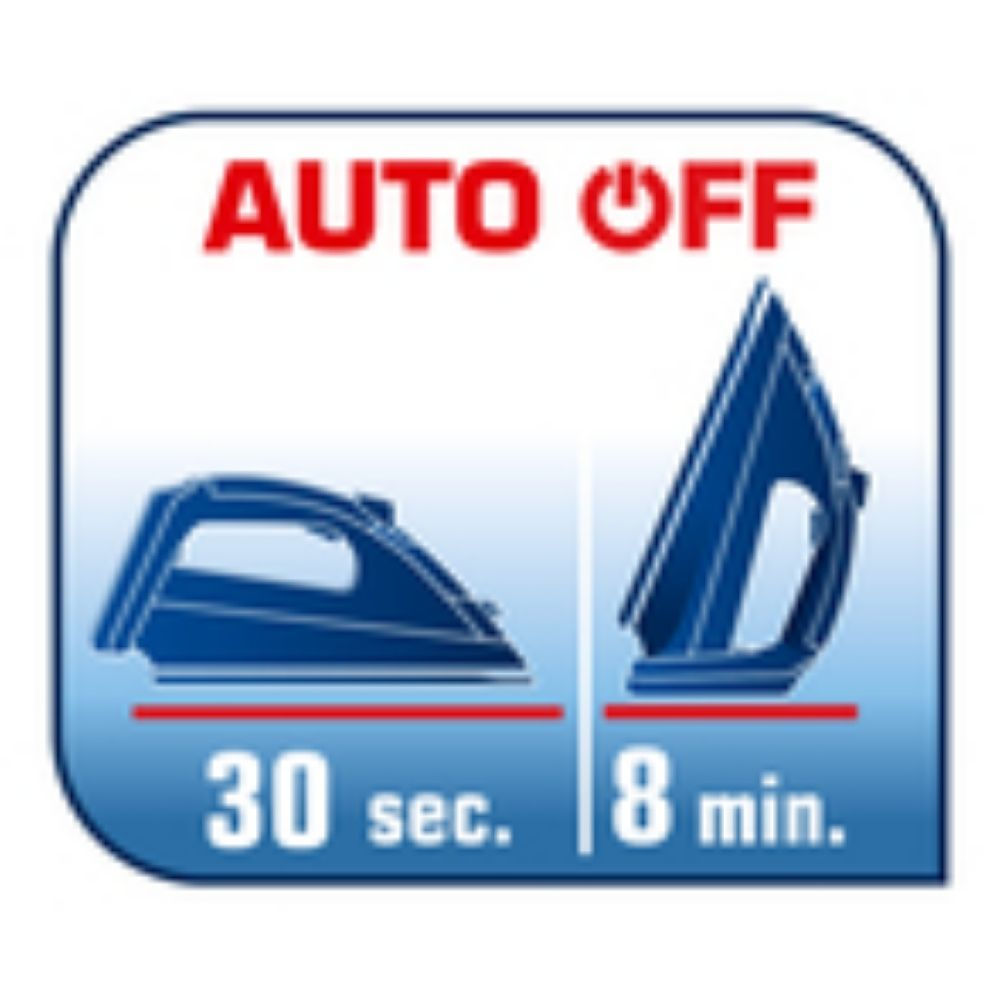

<style type="text/css">.product-description {
  max-width: 1200px;
  margin: 0 auto;
  padding: 40px 20px;
  background-color: #fff;
  color: #333;
}

.feature-grid {
  display: grid;
  grid-template-columns: repeat(3, 1fr);
  gap: 30px;
}

.feature-item {
  text-align: center;
  background-color: #ffffff;
  border-radius: 12px;
  padding: 20px;
  box-shadow: 0 3px 10px rgba(0, 0, 0, 0.08);
  transition: transform 0.3s ease, box-shadow 0.3s ease;
}

.feature-item:hover {
  transform: translateY(-5px);
  box-shadow: 0 5px 15px rgba(0, 0, 0, 0.15);
}

.feature-item img {
  width: 60%;
  height: auto;
  border-radius: 10px;
  margin-bottom: 15px;
}

.feature-item h5 {
  font-size: 1.1rem;
  color: #302f2f;
  font-weight: 600;
  margin-bottom: 10px;
}

.feature-item p {
  font-size: 0.95rem;
  line-height: 1.6;
  color: #555;
}

@media (max-width: 800px) {
  .feature-grid {
    grid-template-columns: 2fr;
  }
}
</style>
<section class="product-description-title" div="">
<h4><strong>Tefal Ultimate Pure Buharlı Ütü: Saf Buhar Gücü</strong></h4>

<p>Üstün performanslı buhar gücü sunan Tefal’den Ultimate Pure buharlı ütü, çamaşırlar üzerindeki kireç lekelerine son veren ve mükemmel sonuçlar sağlayan birinci sınıf bir ütüdür Yeni Micro-Calc Filtre sistemi buharın %100’ünü filtreleyerek, tortu ve lekelerin önlenmesine yardımcı olan olağanüstü bir kireç yönetimi ve muhteşem ütü sonuçları sağlar. 3200W güç, ısınma süresini hızlandırır; 60 g/dk’ye kadar değişken buhar çıkışı son derece etkili bir ütüleme deneyimi sunarken, 260 g şok buhar çıkışı inatçı kırışıklıkları bile açabilir. Kayganlık açısından 1 numara olan ve bakım gerektirmeyen Durilium AirGlide Autoclean taban plakasına, üst düzeyde rahatlık için gelişmiş özelliklere ve saf buhar gücüne sahip buharlı ütüyü keşfedin.</p>
</section>

<section class="product-description">
<div class="feature-grid">
<div class="feature-item">
<h5>Özel 2’si 1 arada Micro-Calc Filtre : çamaşırlardaki kireç lekelerine son vermek için %100 filtrelenmiş buhar gönderimi*</h5>

<p> Yepyeni özel kireç yönetim sistemi, 2’si 1 arada etki için yeni teknoloji Micro-Calc Filtresi kullanır: kireç filtre tarafından durdurulur ve çamaşırlara saf buhar verilir.   Micro-Cac Filtresi kolayca çıkarılabilir ve temizlemesi kolaydır.   Kolay ütü yapmanın ve olağanüstü sonuçların tadını çıkarın!   *Kireç partiküllerini durdurur < 0,2 mm
</p>
</div>

<div class="feature-item">
<h5>Tefal’den çok güçlü buharlı ütü</h5>

<p>Hızlı ısınma ve yüksek performans için 3200W.</p>
</div>

<div class="feature-item">
<h5>Zorlu kırışıklıkları bile açan güçlü buhar takviyesi</h5>

<p>260 g şok buhar çıkışının gücü, kalın kumaşlardaki kırışıklıkları yumuşatır ve inatçı olanları bile kolayca düzeltir.</p>
</div>

<div class="feature-item">
<h5>Kırışıklıkların giderilmesini kolaylaştıran güçlü ve sürekli buhar çıkışı</h5>

<p>60 g/dk’lık sürekli buhar çıkışı, tüm kırışıklıkları etkili bir şekilde gidermek için ideal miktarda sabit buhar çıkışı sağlar.</p>
</div>

<div class="feature-item">
<h5>Durilium AirGlide Autoclean taban plakası: hızlı ve kolay kayma*</h5>

<p>Durilium AirGlide Teknolojisi hızlı ve kolay ütü yapmak için iyi şekilde kayma sağlar. Ayrıca etkili ütüleme için ideal buhar dağılımı sunar. Tefal’in buluşu olan Autoclean katalitik kaplama, taban plakanızın zaman içinde lekesiz ve mükemmel durumda kalmasını sağlar. * kaplamalardaki dış testler</p>
</div>

<div class="feature-item">
<h5>Ekstra güvenlik için akıllı otomatik kapanma</h5>

<p>Yanlışlıkla gözetimsiz bırakıldığında ütü otomatik olarak kapanır. Dikey konumda bırakıldıysa 8 dakika sonra kapanır. Tabanı yere temas halinde ya da yan durumda bırakılmışsa yalnızca 30 saniyede kapanır.</p>
</div>

</div>
</section>